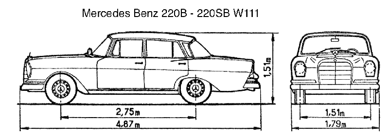

S-klasse
W180, W111, W108, W116 von vorne in der rechten Spalte. W221, W220, W140, W126 von der Vorderseite der linken Spalte.

Typ 220


Ponton ( Typ220 / Typ220S )


Ponton ( Typ220SE )


Heckflosse (Fintail)
W111
220, 220S, 220SE, 230S 1959 - 1968
W112
300SE 1961 - 1965
Designer Friedrich Geiger


abmessungen
universal


Vergleich zwischen alt und neu
W108 , W111